YUFUIN VILLA
大分県由布市 ／ 由布院別荘
大楠の住居
福岡県福岡市 ／ マンションリノベーション
O CLINIC
福岡県久留米市 ／ 診療所併用住宅
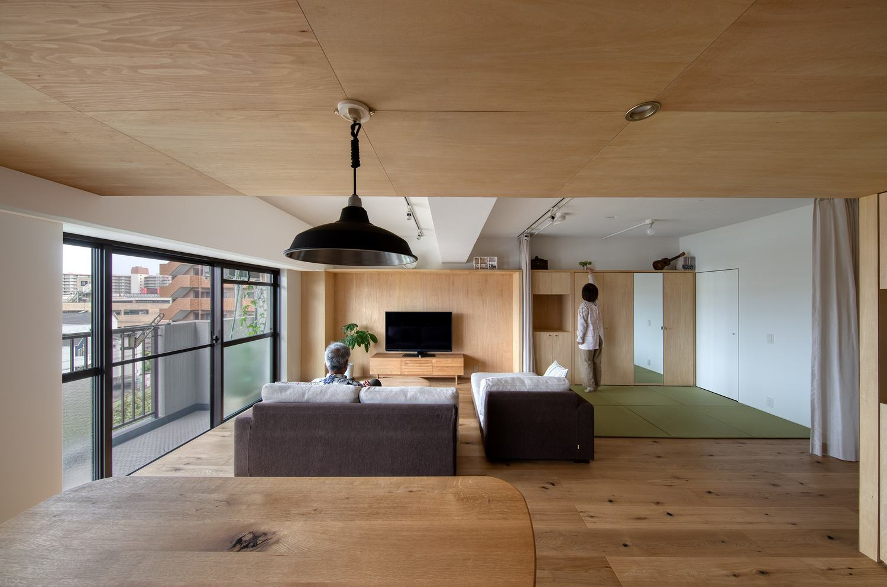
桜ヶ丘の住居
福岡県春日市 ／ 集合住宅リノベーション
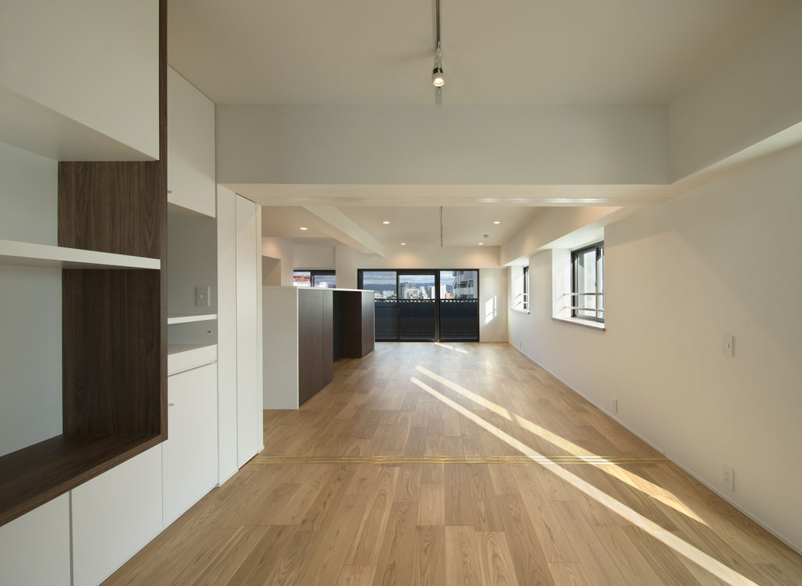
今泉の住居
福岡県福岡市 ／ フルリノベーション
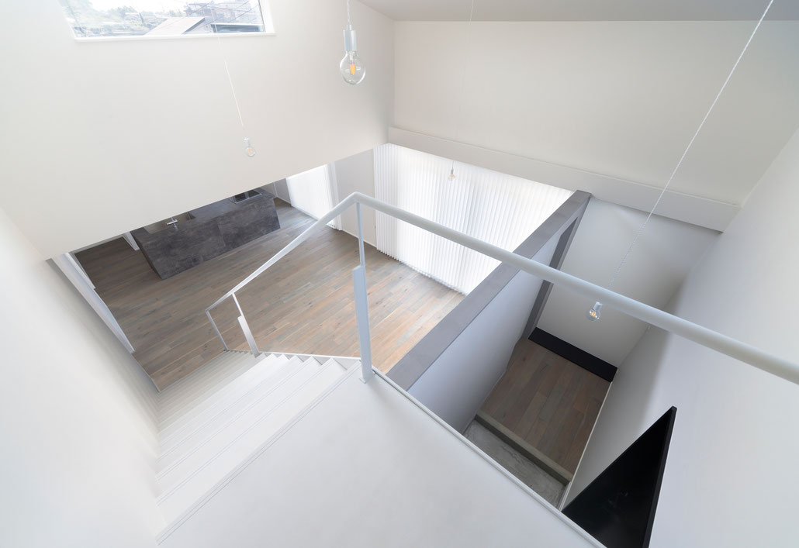
佐賀大和の住宅 Ⅰ
佐賀県佐賀市 ／ 新築住宅
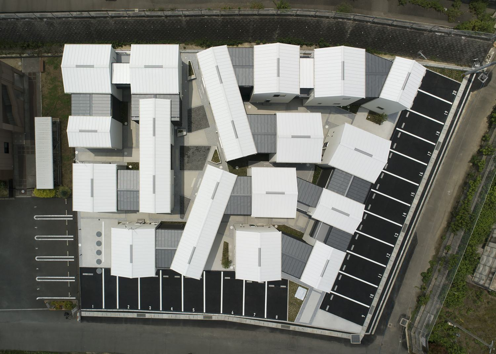
楽市のアパートメント
福岡県飯塚市 ／ 賃貸集合住宅
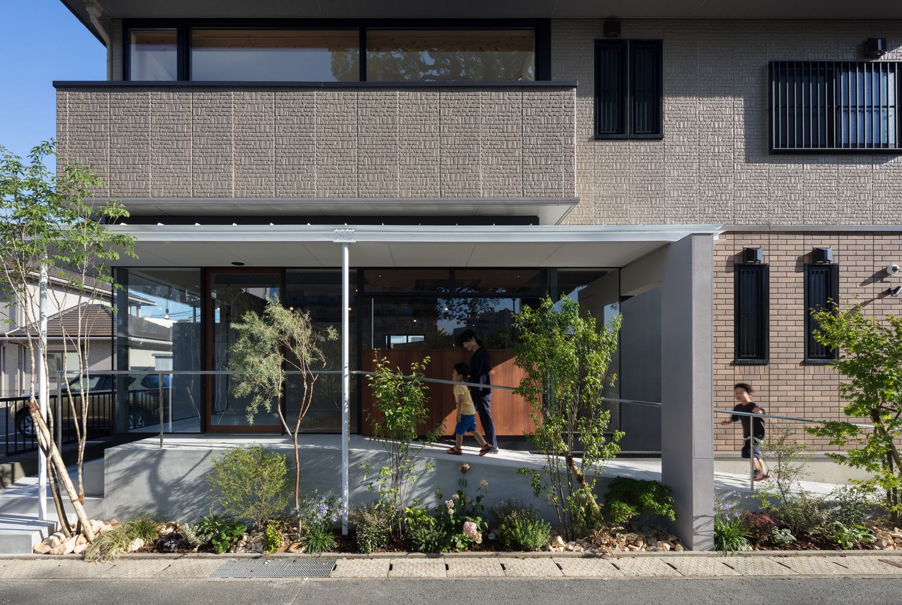
いろどり整骨院 / 住宅
福岡県久留米市 ／ 整骨院併用住宅リノベーション
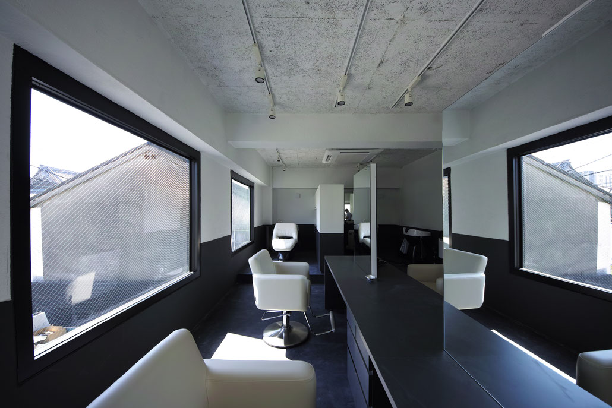
INHERIT
福岡県久留米市 ／ 美容室リノベーション
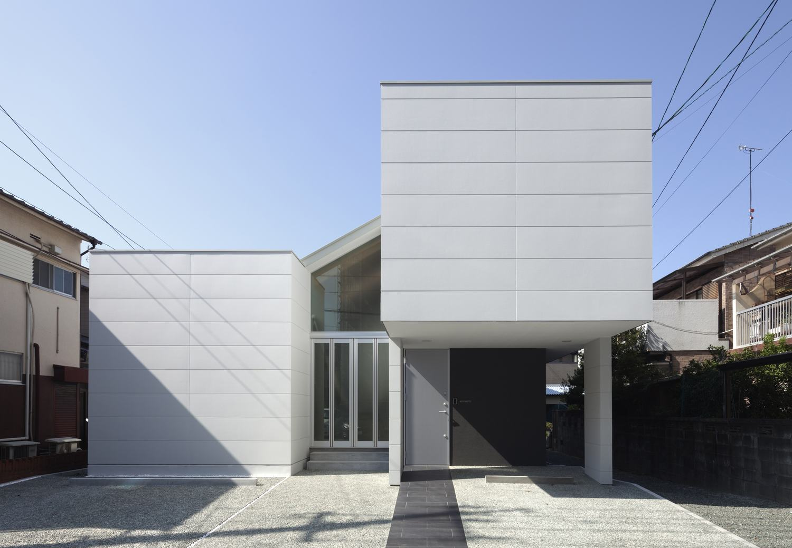
諏訪野町の住宅
福岡県久留米市 ／ 専用住宅
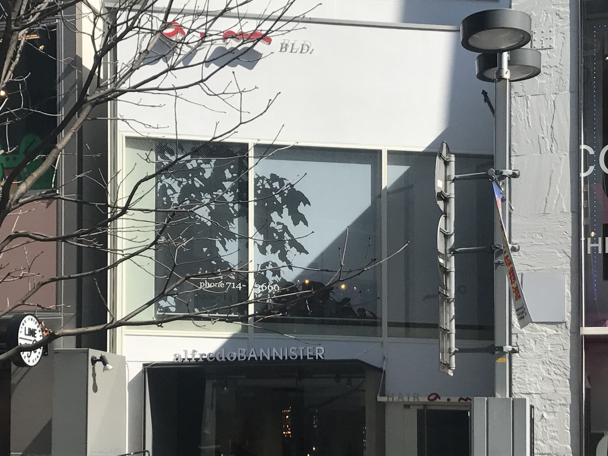
hair make am
福岡県福岡市 ／ サイン計画・スクリーンデザイン
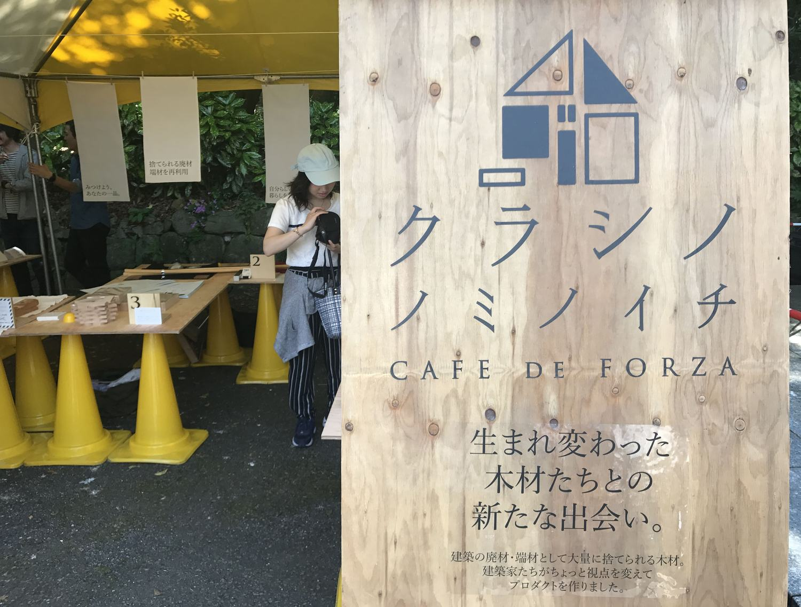
クラシノノミノイチ vol.05
福岡県福岡市 ／ イベント空間構成
青石の丘
愛媛県八幡浜市
飯塚のアパートメント
福岡県飯塚市
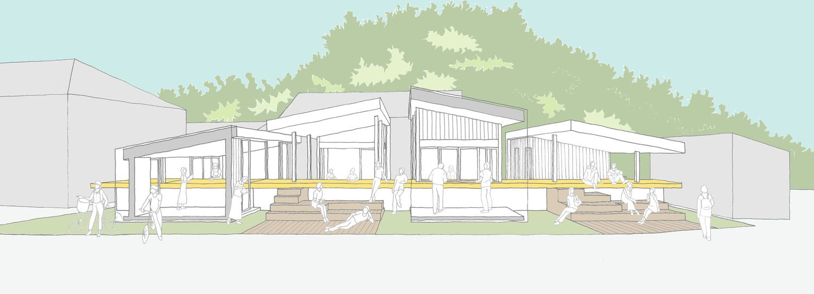
大島18.5
愛媛県八幡浜市大島
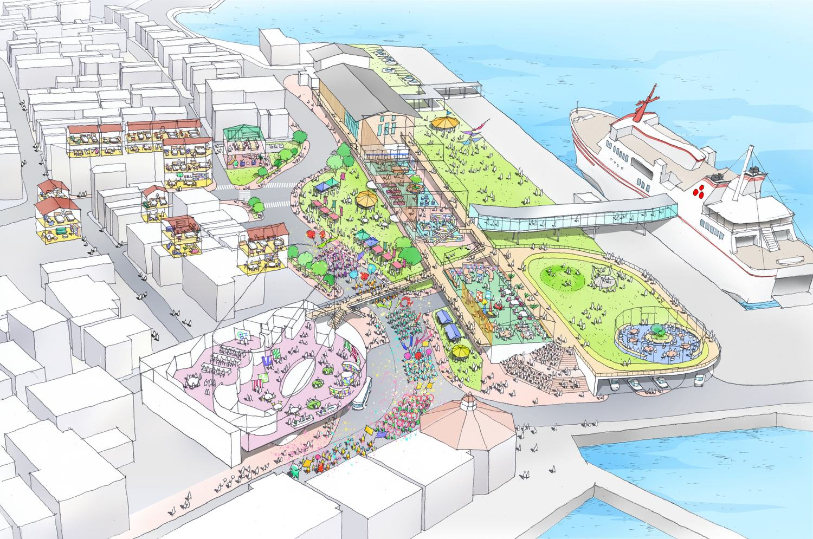
隠岐の暮らし つなぐ風景
島根県隠岐の島
大津の住宅
滋賀県大津市
屋根の群景
愛媛県西条市